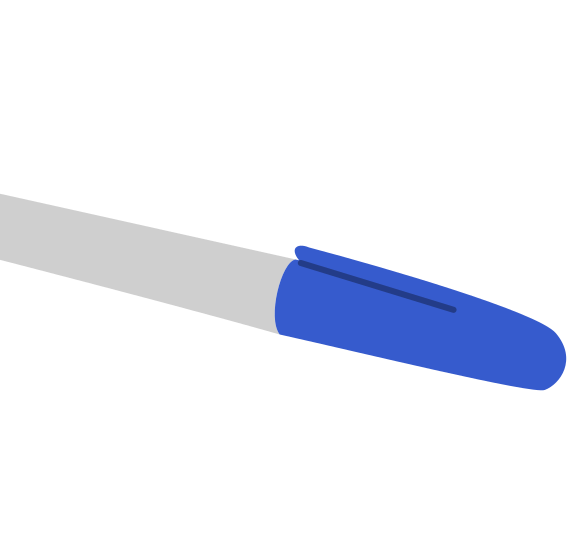
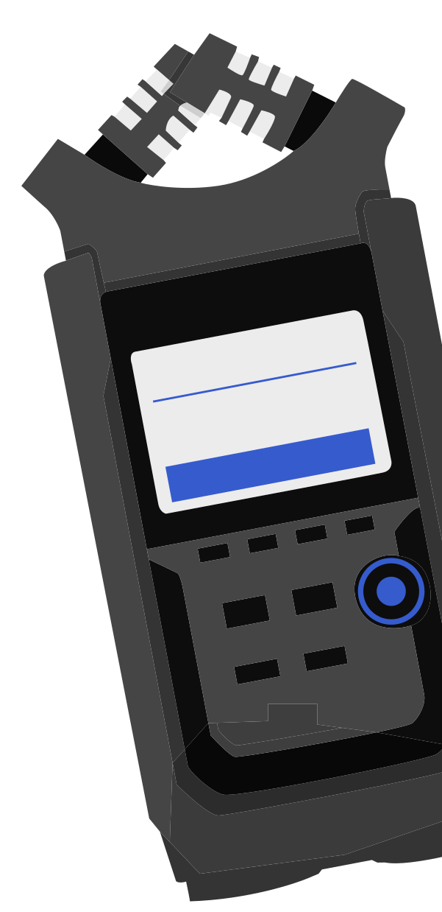

Menoe Grotesque Pro
Студия
Hungar
umlaut
Адам
Кати
Год
2014
2015
Студия
Hungar
umlaut
Адам
Кати
Год
2014
2015

История создания
Шрифт Menoe Grotesque вдохновлён старой печатной
машинкой.
Адам Кати проанализировал шрифт с засечками
в этой машине и
создал свою версию без засечек,
сохранив традиции пишущих
машинок.
Начертания
(2 штуки)
Regular
Italic
ULITRA MARKER
blue
Адам Кати
Режиссёр


Turbosky


Hungar
umlaut
--->
rent
Глифы
§
"
&
^
¤
#
~
%
@
>
¿
÷
*
$
Лигатуры
fi
Þ
î
ђ
ẞ
ѳ
ќ
Љ
ť
Ŧ
Ŝ
ſ
ě
œ

DC 0UT 12V
Дроби
shutter
1/50
tint
-27
iso
400
18:29:035
½
¾
¼
ncard 41 min
ZOOM
Цифры
00:18:29:035
96/24 - 000
007:09:10
ª
СВЕТ:
LED-ПАНЕЛИ, LED PAR, LED BAR,
БЛАЙДЕРЫ, DMX-КОНТРОЛЕРЫ
+ ОТРАЖАТЕЛИ, РАССИВАТЕЛЬ
G21-586-7
ДЛЯ КАМЕР:
ЗУМ-ОБЪЕКТИВ
ФИКС-ОБЪЕКТИВ
МАКРООБЪЕКТИВЫ
ТИЛТ-ШИФТ ОБЪЕКТИВЫ
ШТАТИВ С ПЛОЩАДКОЙ
(2 ШТУКИ)

TOOL
3/9
S/R
ПЕРЕХОДНИКИ
Hungar
umlaut
--->
rent
Русский
English
ελληνικά
Română
Поддержка
85 языков
00:02:46:17
00:05:01:28
Source:звук.m4
Import
Edit
Export
file.languages
v1tc1
24:10:231
our 25
31:45:006
00:03:46
dur 25
31:45:006
mac 25
Детали шрифта
ми
без засечек
a
a
начертание italic
о 0
разница между о и 0
i il
изменение i вместе с l
l ll
изменение l
шрифт моноширинный
и пропорциональный
Драчёва
Мария
Б25ДЗ09
Куратор:
Дарья Зародина